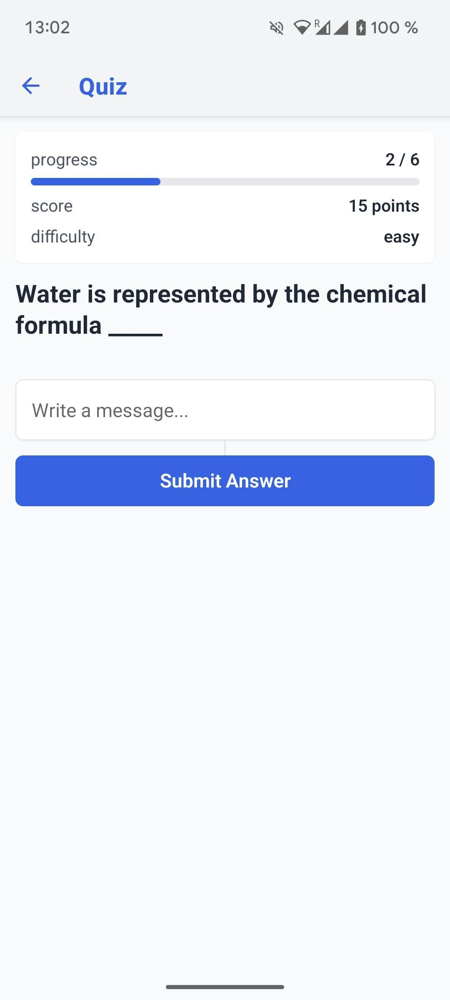
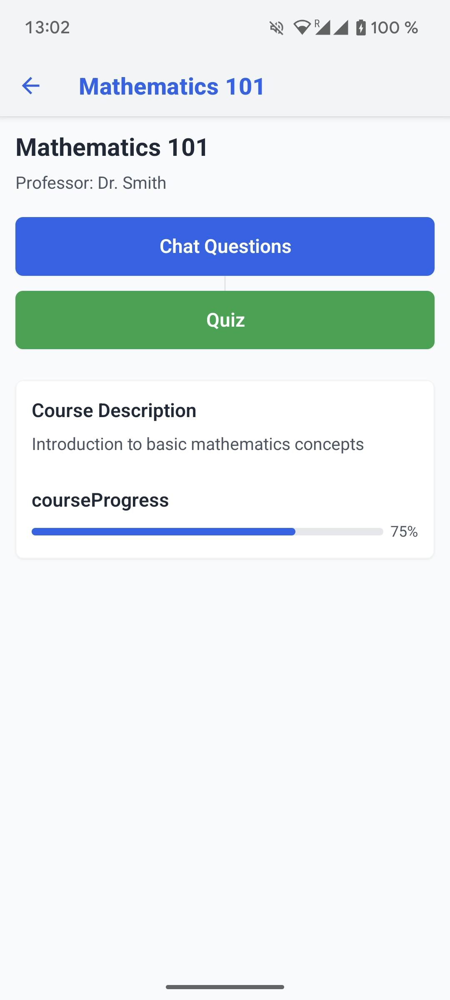
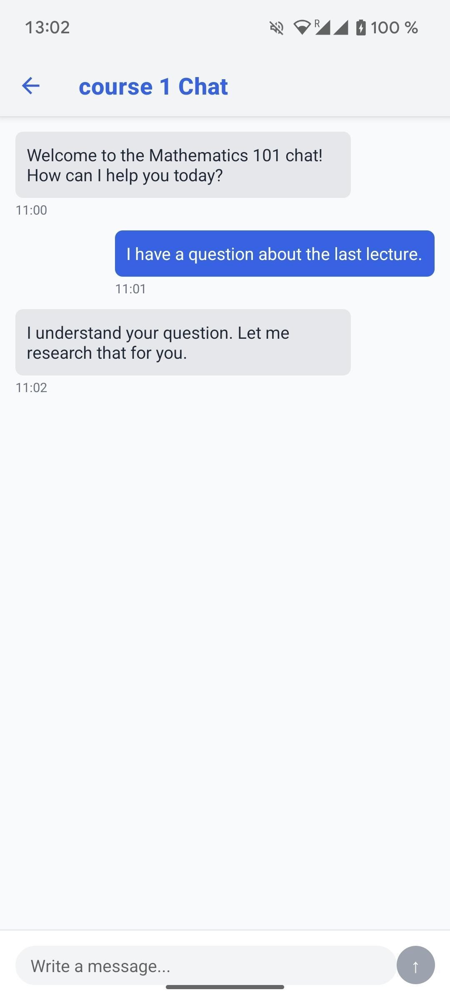
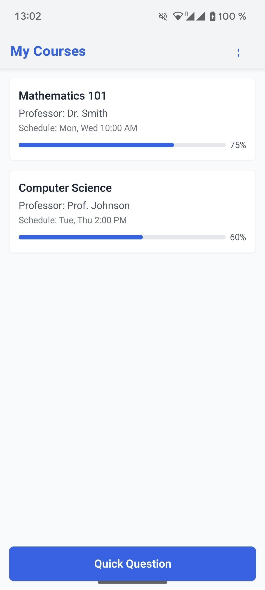

SynthEddix: AI-Powered Learning Material Generator
SynthEddix is an innovative application designed to make content creation effortless for educators and improve the learning experience for students. By using advanced Large Language Models, SynthEddix automatically generates high-quality learning materials, such as multiple-choice questions and fill-in-the-gap exercises, from existing resources, including PDFs and web links.



